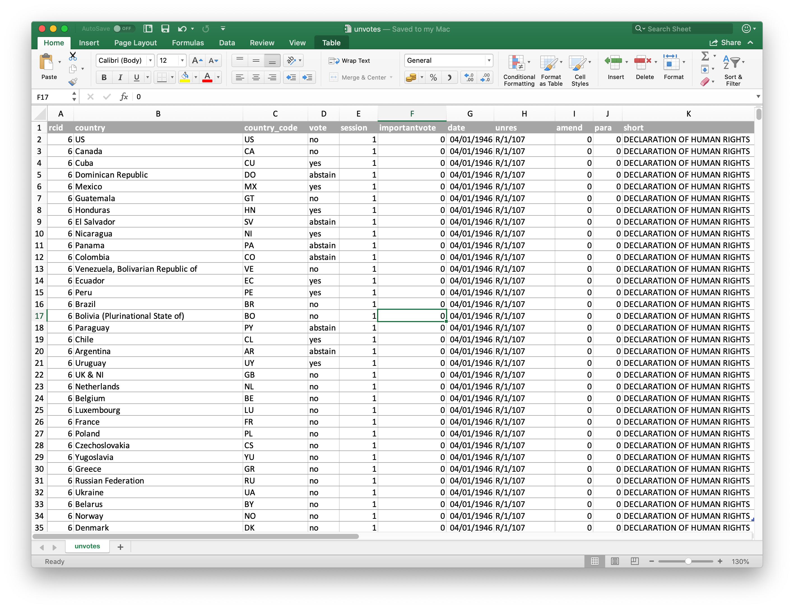
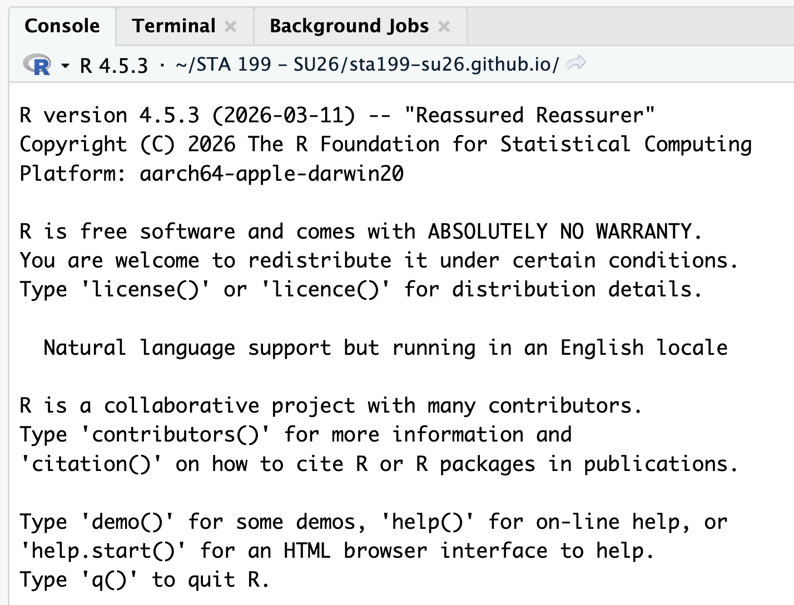
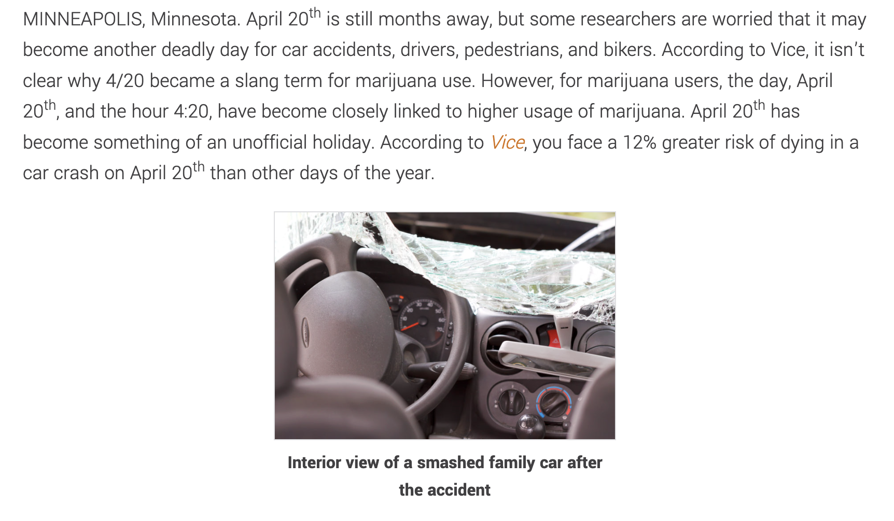
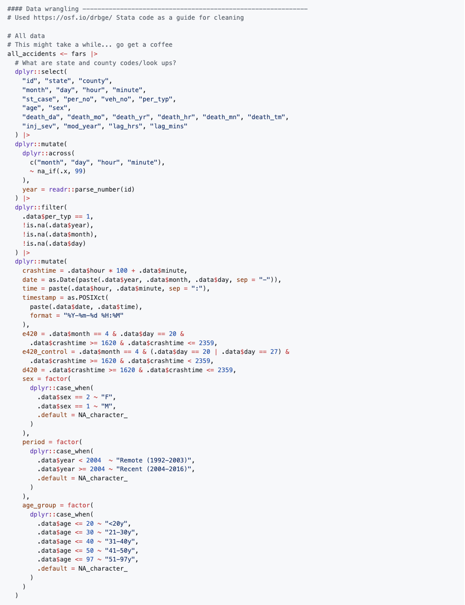
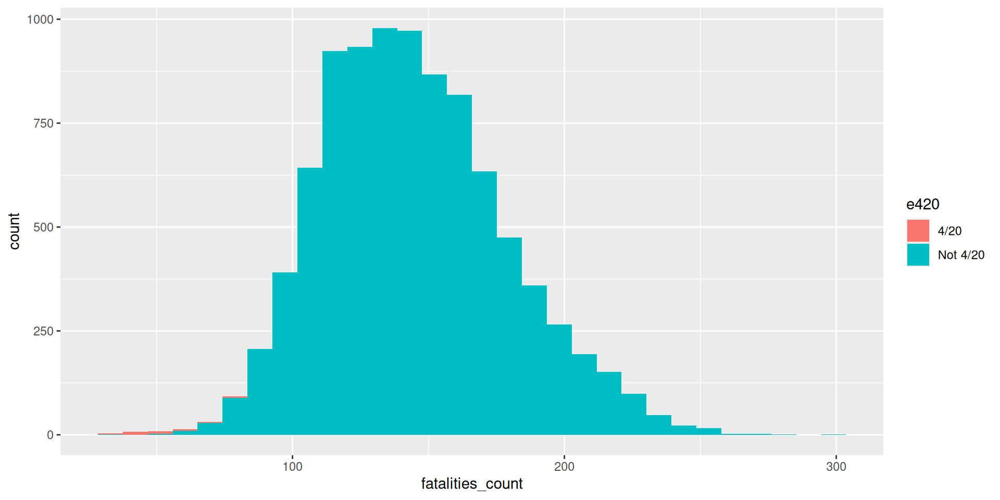
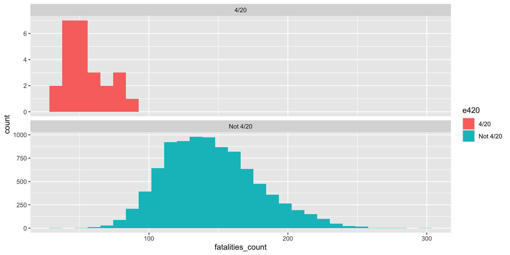
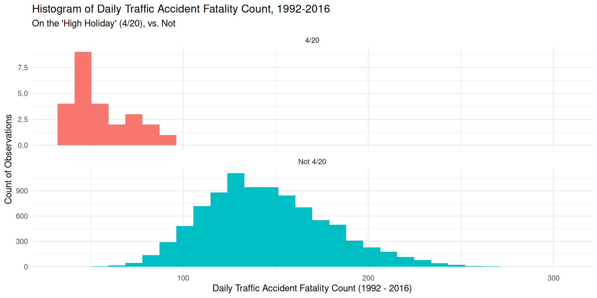
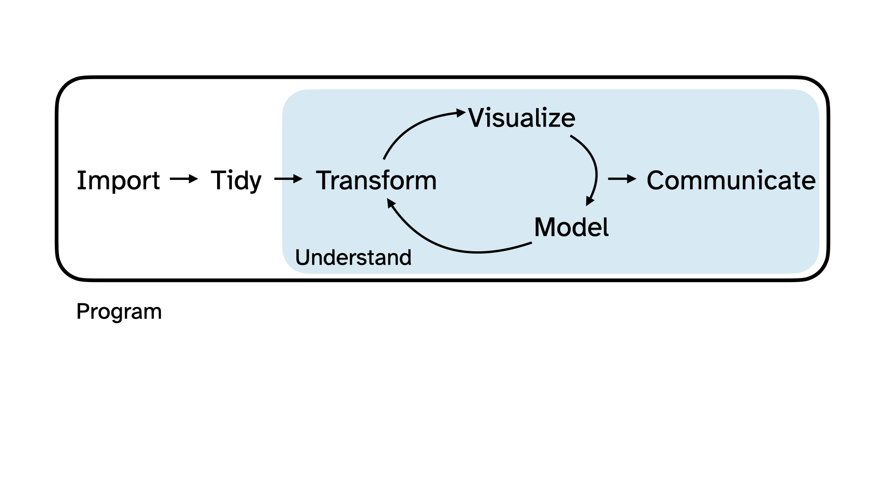
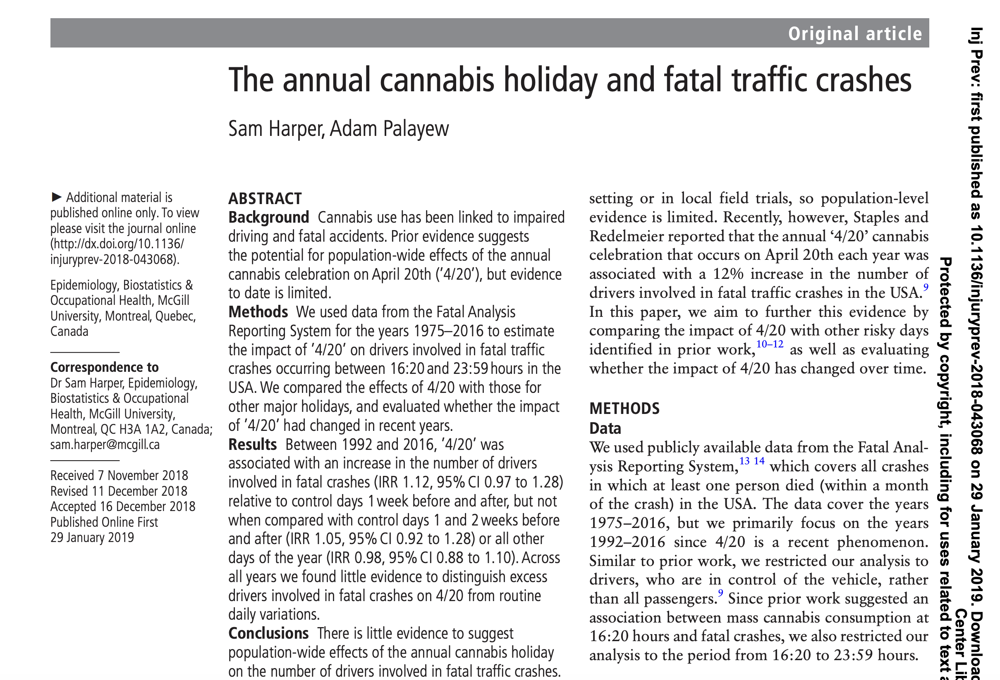

Welcome to STA 199!
Lecture 0
Hello world!
Meet your teaching team
Instructor
Katie Solarz
katie.solarz@duke.edu
TA, Lab Instructor
Kenna Roberts
makenna.roberts@duke.edu
About me!

Meet each other!
- Name
- Year
- Major(s) (or, potential major(s) if undecided!)
- Hometown
- Something you plan to do this summer when STA 199 ends 💔
What are we studying?
First half:
- Transforming messy, incomplete, imperfect data into knowledge;
- Knowledge often takes the form of pictures and a concise set of numerical summaries.
. . .
Second half:
Quantifying our uncertainty about that knowledge.
Imagine this dialog
. . .
Campaign manager: What is the probability that our candidate wins the election?
. . .
(A flurry of analysis takes place.)
. . .
Data scientist: Our best guess is 54%.
. . .
Campaign manager: How reliable is that estimate? How confident are we in that? What’s the margin of error?
. . .
Parallel Universe 1
Data scientist: It’s 54% give or take 3%.
Parallel Universe 2
Data scientist: It’s 54% give or take 20%.
. . .
The manager is going to make wildly different decisions about campaign strategy and spending depending on how uncertain the environment is.
Software
Excel… 👎

R

Syllabus highlights
Homepage
- All course materials
- Links to Canvas, GitHub, RStudio containers, etc.
Activities
- Introduce new content and prepare for lectures by watching the videos and completing the readings
- Attend and actively participate in lectures (and ask / answer questions for participation credit) and labs, office hours, team meetings
- Practice applying statistical concepts and computing with application exercises during lecture
- Put together what you’ve learned to analyze real-world data
- Lab assignments
- Exams
- Term project (completed in teams)
Application exercises
Roughly one per lecture
Graded for good-faith attempt, not accuracy
Practice this week; graded thereafter
At least one commit to your AE repo by 10:45am of the day of lecture
Complete 80% for full lecutre attendance credit
Labs
Lab session formally takes place on Mondays and Thursdays following lecture (11:00am - 12:15pm)
Labs are to be started during the lab session & completed at home by the posted due date
I encourage you to make the most of lab sessions, as you have access to both your peers and Kenna, the course TA, during this time
-
Due dates (typically):
Monday Lab: Due Wednesday at 11:59 PM
Thursday Lab: Due Sunday at 11:59 PM
Discussion with classmates = 🤩 ; Copying = ❌
Lowest lab score is dropped
Exams
Two exams, each 25%
Midterm: June 1, during lecture + lab (tentatively)
Final: June 24, 9am - 12pm
You will be permitted a “cheat sheet” (both sides of a single 8.5” x 11” piece of paper)
It’s possible the first midterm gets bumped to June 2; this will be communicated by next Wednesday, 5/20. The final exam date is above my pay grade & cannot be changed. If you cannot take the exams on these dates, please have a discussion with me today.
Project
Dataset of your choice, method of your choice
Teamwork
Presentation and write-up
Presentations will take place in the last lab (June 22)
Interim deadlines, peer review on content, peer evaluation for team contribution
Some lab sessions allocated to project progress
Final presentation date cannot be changed; you must complete the project and participate in project presentations to pass this class.
Project teams
- Assigned by me (& influenced by communicated topics / areas of interest)
- 3-4 members per team
- Peer evaluation during teamwork and after completion
- Expectations and roles
- Everyone is expected to contribute equal effort
- Everyone is expected to understand all code turned in
- Individual contribution evaluated by peer evaluation, commits, etc.
Grading
| Category | Percentage |
|---|---|
| Labs | 20% |
| Project | 20% |
| Exam 1 | 25% |
| Exam 2 | 25% |
| Application Exercises | 5% |
| Lab Attendance | 5% |
See course syllabus for how the final letter grade will be determined.
Support
- Attend office hours
- Ask and answer questions on the Ed discussion board
- Reserve email for questions on personal matters and / or grades
Office Hours
Katie: Old Chem 203
Tuesday 11:00AM - 1:00PM
Sunday 1:00 - 3:00PM
Kenna: Time & Location TBD
Announcements
- Posted on Canvas (Announcements tool) and sent via email, be sure to check both regularly
- All information is on the course website - please pin to your browser of choice & refer to it often!
Course toolkit
All linked from the course website:
- GitHub organization: github.com/sta199-su26
- RStudio containers: cmgr.oit.duke.edu/containers
- Communication: Ed Discussion
- Assignment submission and feedback: Gradescope
Accessibility
The Student Disability Access Office (SDAO) is available to ensure that students are able to engage with their courses and related assignments.
I am committed to making all course materials accessible, and I’m always open to feedback on how to do this better!
Course policies
Late work, waivers, regrades policy
- We have policies!
- Read about them on the course syllabus and refer back to them when you need it
Make sure I get a letter, and make your appointments in the Testing Center now.
Collaboration
Labs: discussing and helping one another is fine; sharing your solutions via text, email, AirDrop, carrier pigeon, or any other method, and / or copying from others is not permitted;
Exams: collaboration of any kind is completely forbidden
Projects: collaboration of all kinds is enthusiastically encouraged within your team; between teams, it’s the same as labs; do not directly share your materials or copy from others.
Use of AI tools
-
AI tools for code:
- Sure, but be careful/critical! Working code
!=correct / good code. - Must explicitly cite with a direct url linking to the conversation you had.
- Sure, but be careful/critical! Working code
AI tools for narrative: Absolutely not!
AI tools for learning: Sure, but be careful/critical!
Exception: Use of AI tools is completely forbidden during lab session. When you are in lab, you have far better tools / resources available to you - Kenna, our TA, and each other! Blatant disregard for this policy will result in a 0 for the current lab assignment.
Academic integrity
To uphold the Duke Community Standard:
I will not lie, cheat, or steal in my academic endeavors;
I will conduct myself honorably in all my endeavors; and
I will act if the Standard is compromised.
Questions?
Data science (& statistics!) in the wild
“April 20th: Deadly Day for Car Crashes?”
The text below can be found at this link, which is a post on the website of a personal injury law firm. Suppose we want to investigate the validity of their claim… What data might we want? What methods are appropriate? How will we perform our analysis? How can we best communicate our findings?

The data science life cycle

The data science life cycle

Load the data in
On 4/22/2025, TidyTuesday posted a tidy version of the raw data analyzed in Harper and Palayew’s (2019) study, “The annual cannabis holiday and fatal traffic crashes,” available here.
Let’s load this data into R…
The data science life cycle

If we hadn’t had access to our tidy data…

Still, we can tidy some more…
The data science life cycle

Baby’s first graphic
Baby’s first graphic
ggplot(daily_accidents_420, aes(fatalities_count, fill = e420)) +
geom_histogram() 
Baby’s first graphic
ggplot(daily_accidents_420, aes(fatalities_count, fill = e420)) +
geom_histogram() +
facet_wrap(~ e420, ncol = 1, scales = "free_y")
Baby’s first graphic
ggplot(daily_accidents_420, aes(fatalities_count, fill = e420)) +
geom_histogram() +
facet_wrap(~ e420, ncol = 1, scales = "free_y") +
labs(title = "Histogram of Daily Traffic Accident Fatality Count, 1992-2016",
subtitle = "On the 'High Holiday' (4/20), vs. Not",
x = "Daily Traffic Accident Fatality Count (1992 - 2016)",
y = "Count of Observations") +
theme_minimal() +
theme(legend.position = "none") 
The data science life cycle

In reality…

Course themes
-
Statistical literacy matters
- Headlines, social media posts, advertisements, and even “expert” sources can misrepresent scientific findings
- Data-driven claims should be evaluated critically, not accepted at face value
- Understanding how conclusions are reached is an important skill!
-
Reproducibility is essential
- Credible analyses should clearly describe: where the data came from, how the data were processed, and how the analysis was performed
- Reproducible work allows others to verify, critique, and build upon scientific findings
-
Data science is an iterative process
- Curiosity keeps the wheel turning!
GitHub

What is GitHub?
More on this tomorrow - basically, it is the Google Drive of coding!
AE 00: Make your GitHub account
Find AE 00 on the course website!
This week’s tasks
- Complete Lab 0
- Computational setup
- Getting to know you survey
- Read the syllabus
- Get started with data science!